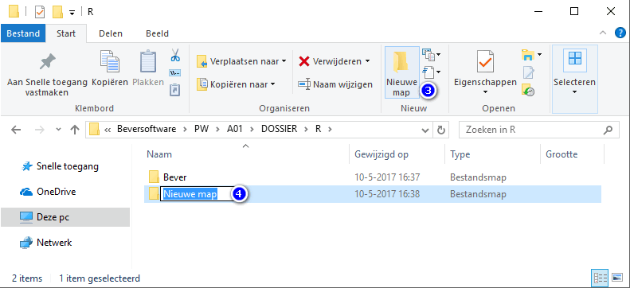
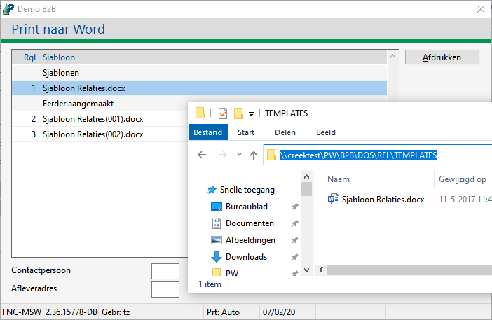

Open onderwerp met navigatie
Hoe voeg ik voor Relaties of Machines een sjabloon toe?
Bij het raadplegen van relatie- of machinegegevens is het mogelijk om deze gegevens te exporteren naar een Word document d.m.v. de knop Naar Word.
Sjabloon aanmaken
Eenmalig moet er een sjabloonmap TEMPLATES voor Relaties en Machines aangemaakt worden. Om dit te doen doorloopt u de volgende stappen:
-
Open Windows Verkenner.
-
Ga naar de hoofdmap van de relatie- of machinedossier, van de betreffende administratie.
-
Maak hierin een nieuwe map aan.

-
Noem deze map <TEMPLATES>.
In deze map komen de sjablonen te staan.
Sjabloon toevoegen
Om een sjabloon toe te voegen, doorloopt u de volgende stappen:
-
Ga naar de map TEMPLATES in map Relatie of Machines.
bijv. voor Relaties C:\Beversoftware\PW\A01\DOSSIER\R\TEMPLATES
Opmerking:
Indien deze map nog niet bestaat, voeg deze eerst toe, zie Sjabloon aanmaken.
-
Download het standaard sjabloon:
- Sjabloon Machines

- Sjabloon Relaties
- Open het Word sjabloon en/of sla het bestand op in de bovengenoemde map TEMPLATES.
-
of maak in deze map een eigen sjabloon aan.
Het sjabloon document mag een vrije naam hebben, zolang dit maar een .docx document is.
Afdrukken naar Word
In Powerall Connect kunt u dit sjabloon gebruiken om gegevens naar Word te exporteren. Om dit te doen doorloopt u de volgende stappen:
-
Ga naar Opvragen relaties of F6
of
Ga naar Opvragen machines (MO) of F8.
-
Kies voor de knop Naar Word.
-
Selecteer het sjabloon en bij Relaties het eventuele Contactpersoon en/of Afleveradres optioneel.

- Kies voor de knop Afdrukken.
-
Als het document gereed is, wordt deze geopend in Microsoft Word.
-
Open dit Word document en indien nodig pas het aan of druk het af.
Nadat de gegevens in de gekozen Word-sjabloon zijn ingevoegd, wordt het document opgeslagen in de relatie- of machinespecifieke dossier, in de submap MSWORD.
Het document krijgt dezelfde naam als het sjabloon met het revisienummer tussenhaakjes als achtervoegsel.
Gerelateerde onderwerpen
Copyright © 1990-2026 Beaver Creek Technology B.V. Disclaimer